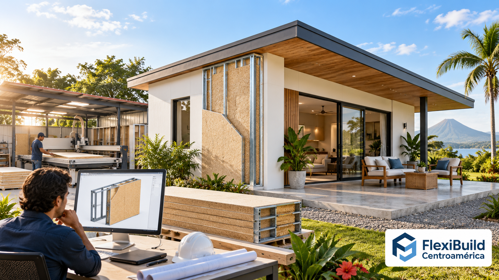
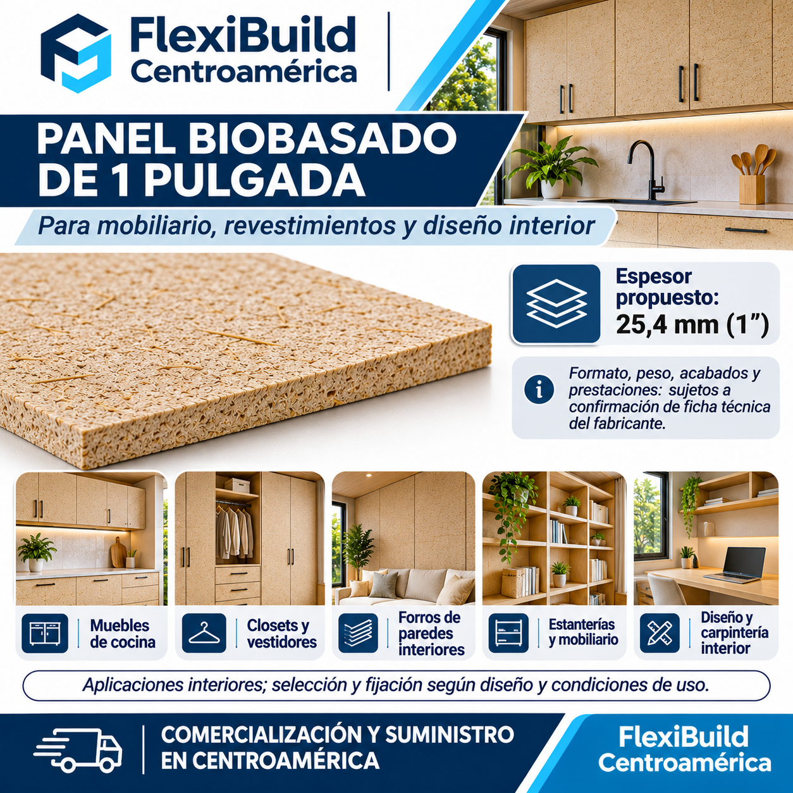
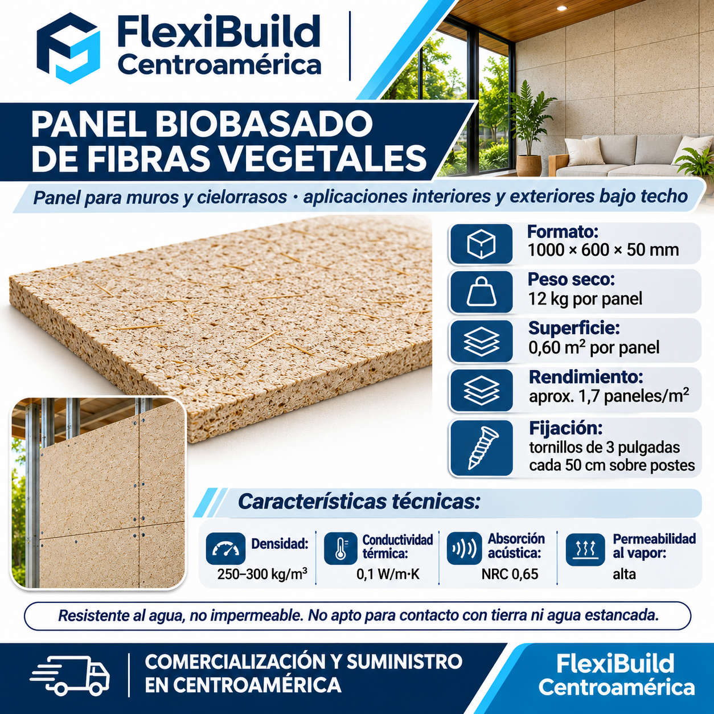
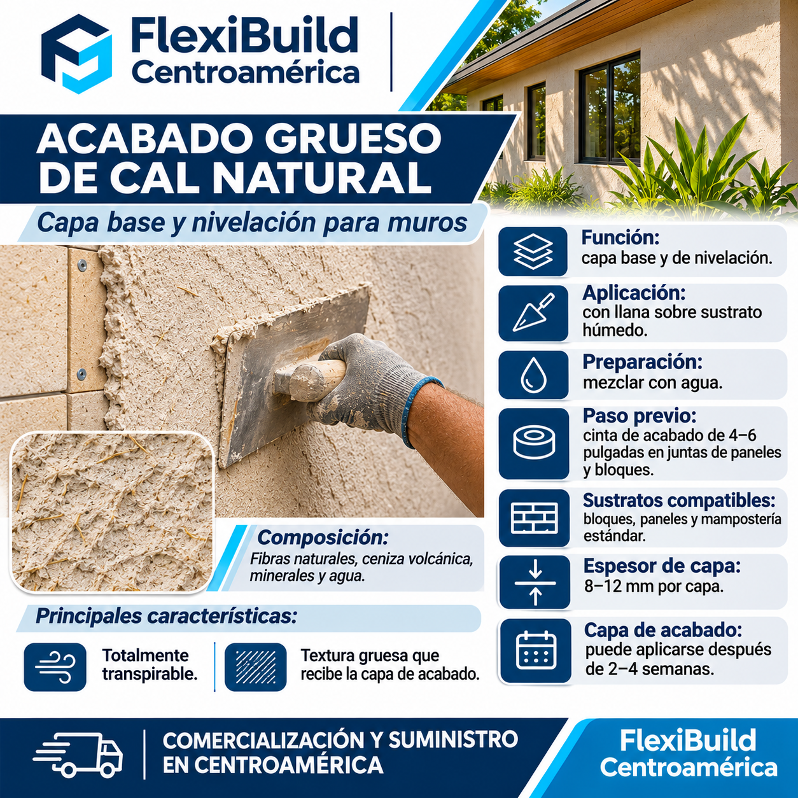

Productos y aplicaciones
Productos Biomodulares y materiales biobasados
Catálogo visual para constructoras, desarrolladores, arquitectos, ingenieros, ferreterías, distribuidores y expatriados en Nicaragua y Centroamérica.
Las imágenes no certifican por sí solas prestaciones ni confirman inventario.
Detalles y suministro
Catálogo de productos FlexiBuild
Referencias de producto
Confirme documentación técnica, disponibilidad y condiciones de suministro antes de comprar o especificar.

2. Panel biobasado de fibras vegetales · 50 mm

3. Panel propuesto de 1 pulgada para mobiliario e interiores

4. Acabado grueso de cal natural

5. Acabado fino de cal natural
Solicite una cotización
Indique ubicación, producto, aplicación y cantidad estimada.